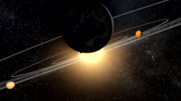
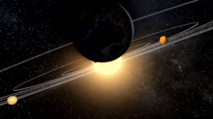

!!!!!!!!!!!!!!!!DON'T FORGET A TABLE OF CONTENTS!!!!
 

POSITION: 1st from the Sun (distance: 36 million miles or 0.39 AU)
TYPE: Terrestrial
SIZE: Smallest; only slightly larger than Earth's moon and is 38% the size of Earth
LENGTH OF A YEAR: 85 Earth days
ATMOSPHERE: Thin; consists of oxygen, sodium, hydrogen, helium, potassium
MOONS: None
RINGS: None
TEMPERATURES: 800F to -290F
Facts:
POSITION: 2nd from the Sun (distance: 67 million miles)
TYPE: Terrestrial
SIZE: 3rd smallest; is 95% the size of Earth
LENGTH OF A YEAR: 225 Earth days
ATMOSPHERE: Thick and dense; consists of carbon dioxide, nitrogen
MOONS: None
RINGS: None
TEMPERATURES: ~900F
Facts:

POSITION: 3rd from the Sun (distance: 93 million miles)
TYPE: Terrestrial
SIZE: 4th smallest; biggest of the terrestrial planets
LENGTH OF A YEAR: 365 Earth days
ATMOSPHERE: 78% nitrogen, 21% oxygen, 1% other
MOONS: 1
RINGS: None
TEMPERATURES: 116F to -114F
Facts:
POSITION: 4th from the Sun (distance: 142 million miles)
TYPE: Terrestrial
SIZE: 2nd smallest; is 53% the size of Earth
LENGTH OF A YEAR: 687 Earth days
ATMOSPHERE: Thin; consists of carbon dioxide, argon, nitrogen, and a little oxygen and water vapor
MOONS: Phobos and Deimos
RINGS: None
TEMPERATURES: 70F to -225F
Facts: